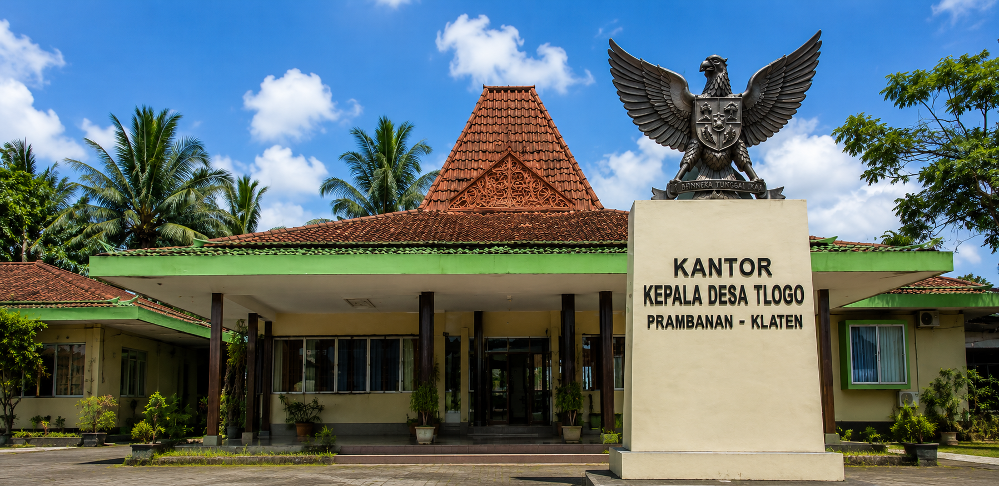

DESA TLOGO

Kecamatan Prambanan • Kabupaten Klaten • Jawa Tengah
Penduduk
Kepala Keluarga
UMKM
Selamat datang di Website Resmi Desa Tlogo. Website ini menjadi media informasi dan komunikasi antara pemerintah desa dengan masyarakat.
Melalui website ini masyarakat dapat memperoleh informasi mengenai profil desa, kegiatan, galeri dokumentasi serta berbagai informasi lainnya.
Lihat berbagai dokumentasi kegiatan masyarakat, pembangunan desa, dan acara budaya Desa Tlogo.
Lihat Galeri